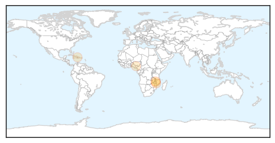
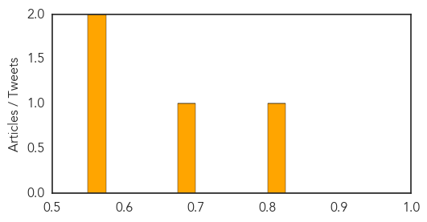
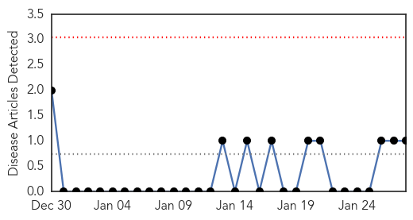
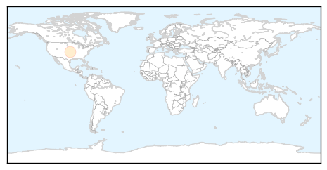

Cholera
30-Day Web Trend
7 alerts, 5 warnings

30-Day Twitter Trend
1 alerts, 0 warnings

Article Locations
Article Confidences
Top Articles:
Top Tweets:
- 0.612
- More Cholera in Nigeria: Cholera Kills Eight in Anambra http://t.co/UqUZkeULXB nigeria via
- 0.545
- RT: Mapping Cholera in Haiti (2010) & New York (1832) can teach us how disease spreads: http://t.co/FXes2B2DFH h…
Mold/Fungal
30-Day Web Trend
0 alerts, 0 warnings

30-Day Twitter Trend
0 alerts, 0 warnings

Article Locations
Article Confidences

Top Articles:
Top Tweets:
-
No tweets found for Jan 28, 2015